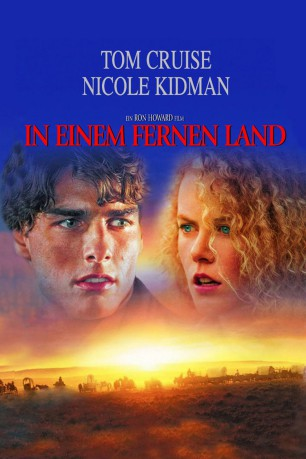

#2217 In einem fernen Land
Alternativ: Far and Away
 
 IMDB-Wertung: 6.6 / 10
IMDB-Wertung: 6.6 / 10  Metascore: 49
Metascore: 49 
Irland, 1892: Der arme Farmpächter Joseph Donelly schwört Rache an seinem unmenschlichen Pachtherrn. Doch alles kommt ganz anders, als er beschließt, dessen Tochter Shannon nach Amerika zu begleiten, wo die beiden zusammen ihren Traum von einem Stück eigenem Land verwirklichen wollen. Bei der Ankunft in Boston findet Joseph eine Unterkunft und verdient sich seinen Lebensunterhalt als Faustkämpfer. Aber sein anfängliches Glück findet ein jähes Ende, als er und Shannon bei eisiger Kälte auf die Straße geworfen werden. Ihre Wege trennen sich und Joseph findet einen neuen Job bei der Eisenbahn, doch er erinnert sich immer wieder an sein ursprüngliches Ziel.
Jahr: 1992
Dauer: 140 Minuten
FSK: 12
Land: USA Studio: Universal PicturesTonspuren: DTS - ,
Untertitel: Deutsch,
Auflösung: 1080p (1920x816) Größe: 7434 MB
Genre: Drama, Abenteuer, Western, Liebe
Regisseur:  Ron Howard
Ron Howard
Drehbuch: Bob Dolman, Ron Howard, Bob Dolman
Soundtrack: John Williams
Darsteller:
 Tom Cruise als Joseph Donnelly
Tom Cruise als Joseph Donnelly Nicole Kidman als Shannon Christie
Nicole Kidman als Shannon Christie Thomas Gibson als Stephen Chase
Thomas Gibson als Stephen Chase Robert Prosky als Daniel Christie
Robert Prosky als Daniel Christie Barbara Babcock als Nora Christie
Barbara Babcock als Nora Christie Cyril Cusack als Danty Duff
Cyril Cusack als Danty Duff Colm Meaney als Kelly
Colm Meaney als Kelly- Michelle Johnson als Grace
 Wayne Grace als Bourke
Wayne Grace als Bourke- Niall Toibin als Joe
 Jared Harris als Paddy
Jared Harris als Paddy Steven O'Donnell als Colm
Steven O'Donnell als Colm Clint Howard als Flynn
Clint Howard als Flynn- Rynagh O'Grady als Olive
 Brendan Gleeson als Social Club Policeman
Brendan Gleeson als Social Club Policeman- Hoke Howell als Crew Boss
 Rocco Sisto als Immigrant #1
Rocco Sisto als Immigrant #1- Donré Sampson als Railworker
- Mark Wheeler als Officer
 Rance Howard als Tomlin
Rance Howard als Tomlin- Aedin Moloney als Prostitute
 John-Clay Scott als Boxer
John-Clay Scott als Boxer- Clay M. Lilley als Boxer
 Cole S. McKay als Boxer
Cole S. McKay als Boxer Jeff Ramsey als Boxer
Jeff Ramsey als Boxer Anthony De Longis als Boxer
Anthony De Longis als Boxer Carl Ciarfalio als Italian Boxer
Carl Ciarfalio als Italian Boxer- Bob Dolman als Honest Bob
- Tom Lucy als Immigration Policeman
- James McDonald als Irish Immigrant , uncredited
- Kris Murphy als Dancing Girl , uncredited
- Eileen Pollock als Molly Kay
- Douglas Gillison als Dermody
- Barry McGovern als McGuire
- Gary Lee Davis als Gordon
- Peadar Lamb als Farmer
- Mark Mulholland als Peasant #1
- P.J. Brady als Peasant #2
- Wesley Murphy als Landlord
- Jimmy Keogh als Priest
- J.G. Devlin als Villager #1
- Gerry Walsh als Villager #2
- Brendan Cauldwell als Tavern Keeper
- Derry Power als Peter
- Noel O'Donovan als Matthew
- Macdara Ó Fátharta als John
- Eileen Colgan als Lady #1
- Kate Flynn als Lady #2
- Joan O'Hara als Lady #3
 Frankie McCafferty als Map Vendor
Frankie McCafferty als Map Vendor
Datei: X:\HD-Western-1980-1999\In einem fernen Land (1992, FSK12, 1920x816).mkv seit 21.10.2015
Festplatte: HD Eastern+Western
 Es gibt insgesamt 29 Filme in der Gruppe 'HD-Western-1980-1999'
Es gibt insgesamt 29 Filme in der Gruppe 'HD-Western-1980-1999'